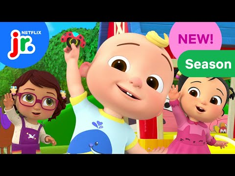

NETFLIX / ANIMATIONCoComelon Lane Season 2
UV & Texturing
Props and environment set-dressing assets, prepared for an animation production pipeline.
BLENDER · SUBSTANCE PAINTER
My contribution
- UV unwrapped and textured props and environment set-dressing assets using Blender and Substance Painter.
- Created and applied PBR materials, preparing assets to meet production and pipeline requirements.
- Collaborated with the production team to maintain consistent asset quality.